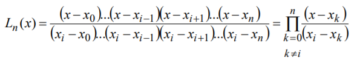
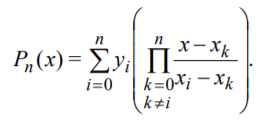
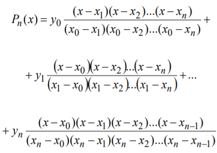

Многочлен Лагранжа
Інтерполяційний многочлен Лагранжа має вигляд:

де Ln(x) – множник Лагранжа.
З цього слідує, що:
Чисельник і знаменник не повинні включати в себе значення x=xi , так як результат буде дорівнювати нулю. В розвернутому вигляді формулу Лагранжа можна записати:
Інтерполяційний многочлен Лагранжа зазвичай застосовується в теоретичних дослідженнях (при доведенні теорем, аналітичному розв’язанні задач и т. п.).